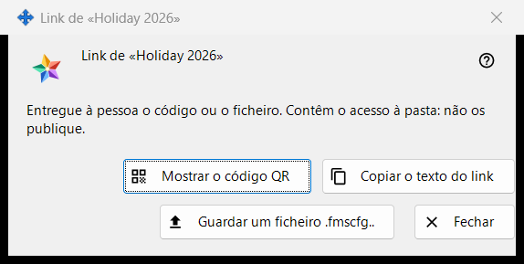
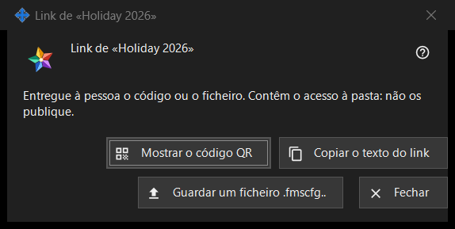

Link para uma pasta
Finalidade
Entrega uma pasta publicada a uma pessoa que não tem conta no servidor de troca: sob a forma de código QR, de texto do link e de ficheiro .fmscfg. A janela abre-se depois de «Criar um link..» ou «Novo link..» no grupo «As minhas pastas partilhadas na conta de troca» e a partir de «Mostrar QR / Código..» na janela «Dar acceso externo..» de uma pasta. No programa atual, os dois comandos estão desativados, porque o acesso para pessoas fora da conta não é oferecido; esta página descreve o que a janela mostra quando existe um link.


Nesta ordem
- Selecione uma pasta publicada e clique em «Criar um link..» (ou em «Novo link..» para substituir um link antigo).
- Leia a nota no topo da janela.
- Entregue o link com «Mostrar o código QR», «Copiar o texto do link» ou «Guardar um ficheiro .fmscfg..».
- Clique em «Fechar».
Os elementos
Quando a janela está disponível
A janela só existe para um link que acabou de ser criado ou que já existe. Enquanto o acesso para pessoas fora da conta não for oferecido, «Criar um link..» e «Novo link..» ficam desativados, uma nota por baixo indica o motivo e a janela não se abre; «Mostrar QR / Código..» também fica desativado. «Remover o link» continua disponível.
A nota no topo
«Entregue à pessoa o código ou o ficheiro. Contêm o acesso à pasta: não os publique.» Quem tiver o código QR, o texto do link ou o ficheiro pode abrir essa pasta. O texto do link nunca é mostrado no ecrã.
Mostrar o código QR
Abre a imagem do código QR numa janela de ampliação. O botão só existe se foi possível criar um código QR; a um texto do link demasiado grande para um código QR, a janela responde «O código é demasiado grande para um código QR - use o ficheiro.».
Copiar o texto do link
Coloca o texto do link (começa por FMSSFTP2:) na área de transferência por uma via protegida que o mantém fora do histórico da área de transferência do Windows e da área de transferência na nuvem, e responde «Texto do link copiado.». Só existe se o link tiver um texto.
Guardar um ficheiro .fmscfg..
Guarda um ficheiro de definições para esta única pasta, que só o proprietário pode ler. A janela indica «Ficheiro guardado:» seguido do caminho, ou «Não foi possível guardar o ficheiro.». Só existe se foi possível criar o ficheiro.
Novo link e Remover o link
Ambos pertencem ao grupo, não a esta janela, e ambos perguntam primeiro, com «Não» como resposta predefinida: «Novo link..» avisa que todos os códigos QR e ficheiros anteriores deixarão de funcionar, «Remover o link» que deixarão de funcionar todos os códigos QR e ficheiros distribuídos com ele.
Fechar
Fecha a janela e elimina dela o texto do link, o conteúdo do ficheiro e a imagem do código QR.
Definições do gestor · Definições de partilha SFTP · Definições do servidor de troca